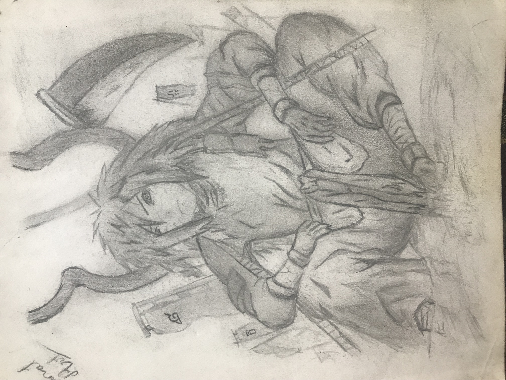
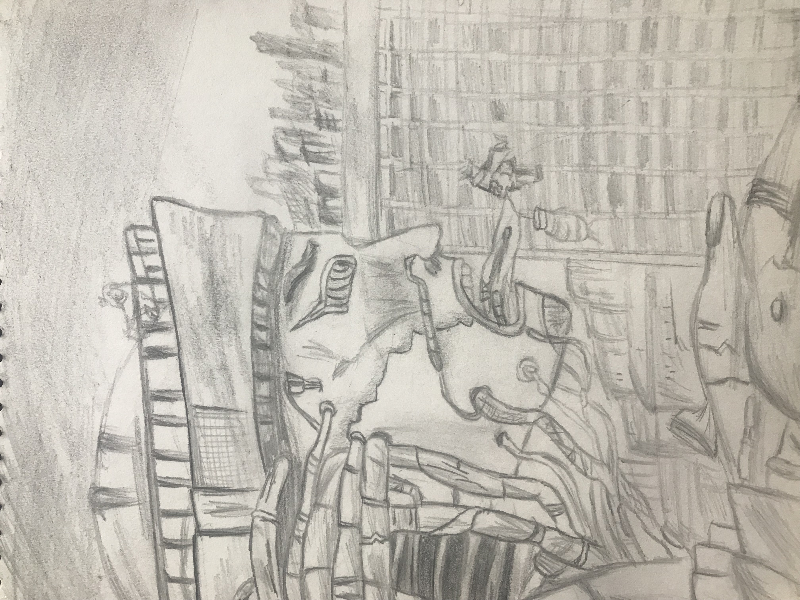
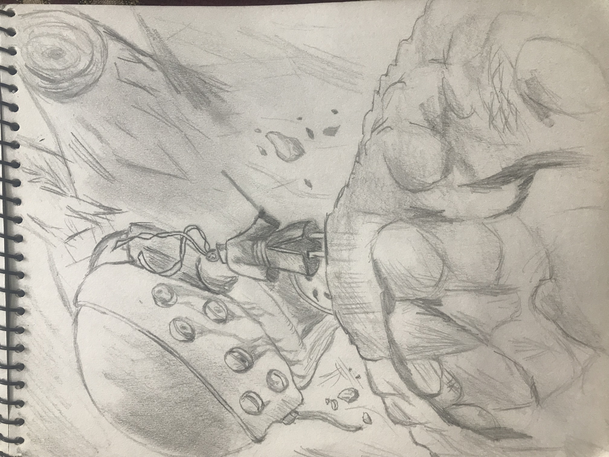

WELCOME
This is a experimental website made only for the purpose of content related to the grade 12 course.So the elements in this website are for the use of the advancement of the grade 12 course.

"A LEAP OF FAITH"
the academic sessions of prasadi is in a run.The students a in a lot of pressure regarding homework,grades and the further studies.All the pressure might cause mental stress and irritaion.study is important but not the main priority of a student.

"LEARNING NEVER ENDS"
We prasadi family pray for the hard times and all the struggles in the learning .studying is a continous process which never ends so have patients

"NEVER ENDING BOND"
a bond between a student and teacher is very great.A teacher can lead a student to heaven or to the hell.So, the connection between the teacher and a student must be very good.Respecting the teacher is the most important thing for a student.
"ART BY SUTDENTS"
by dharma

by sanat rai

by nikhil

by riwaz

add your image